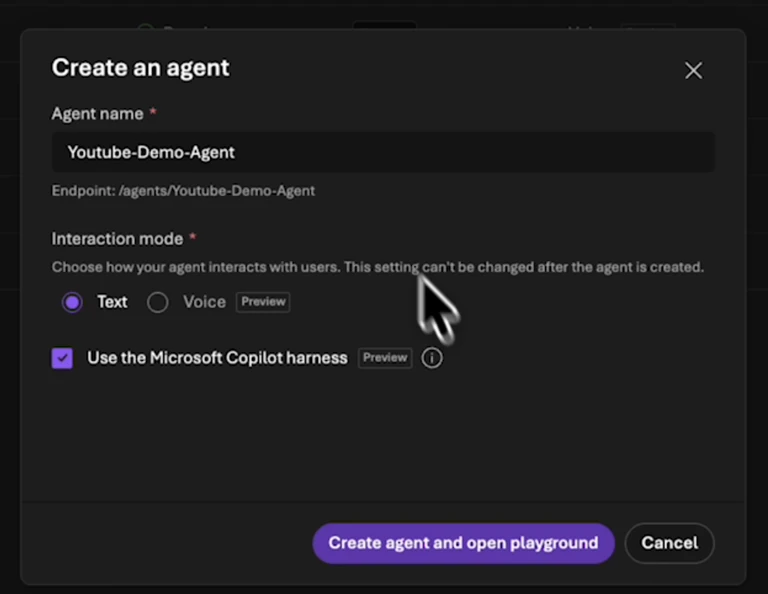
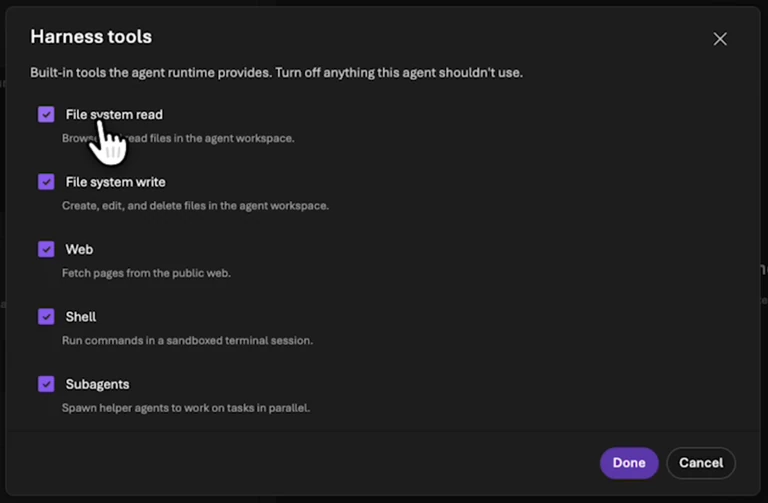
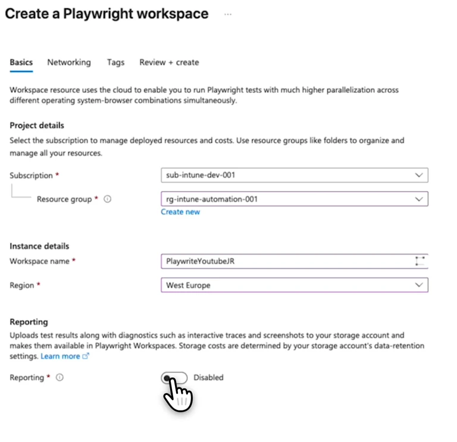
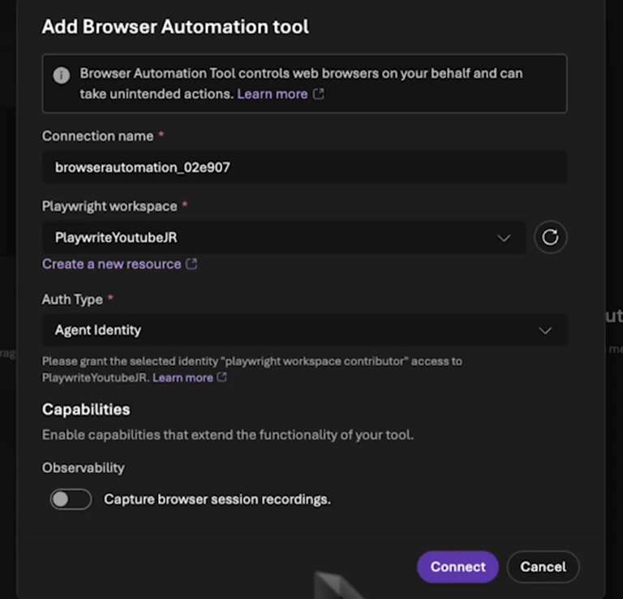
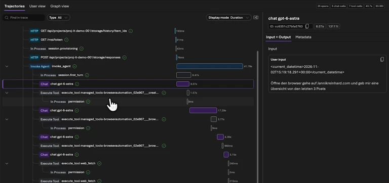

Foundry Copilot Harness and Browser Automation: Portal Demo
My agent was supposed to read the latest posts on my blog. Even that small task needed a narrower scope after two timeouts. The successful response listed three articles. In the traces, I could see that the agent had used Browser Automation and an additional Web Fetch step.
That is the workflow in this Foundry episode: create a prompt agent with Microsoft Copilot Harness, connect Browser Automation, and inspect how the answer was produced. The recording comes from my Modern Device Management project on 2 November 2026. The video is in German.
Watch the video
Separate the two building blocks
Copilot Harness is an optional Foundry-managed runtime for prompt agents. The resource remains a prompt agent; the runtime coordinates the model and supported capabilities. You do not operate a separate harness process. In the current public preview, you choose it when creating a new agent. The initial preview does not let you switch an existing agent to it. Harness configuration in Foundry
Browser Automation adds a managed browser as a tool, backed by an Azure Playwright workspace. That browser runs remotely rather than on my local machine. An agent can use it to open a website and inspect its content. Browser Automation in Foundry
The harnessâs built-in web capability and a browser operation can therefore appear in the same workflow. An answer containing links does not tell me which route was used.
Create an agent with the harness
In the new Foundry portal, I open Build > Agents, create an agent, and name it Youtube-Demo-Agent. I keep the interaction mode on Text, select Use the Microsoft Copilot harness, and open the playground.


The playground already contains Harness Tools. Under Edit, I can see File system read, File system write, Web, Shell, and Subagents. The recording shows these selected. For a business workload, I would review each capability against the task.
An agent summarizing public articles initially needs no shell for arbitrary commands. File reads and writes are separate decisions too. The selected model and permissions on connected resources also need review.


My recorded instruction is a short sentence describing a daily support agent. That is enough to demonstrate the interface. For repeatable testing, I would define the task and expected output more precisely:
Open https://jannikreinhard.com and find the three latest published posts.
For each post, return its title, date, and direct link.
Read public pages only. Do not subscribe an email address or change content.
Identify any information you cannot establish reliably.This is a narrower proposed test, not a quotation of my first demo prompt.
Connect a Playwright workspace
I add Browser Automation through Add. The connection dialog needs a Playwright workspace, so I open resource creation, choose the subscription and resource group, give the workspace a unique name, and check its region.


I leave reporting disabled in this demo and use public network access. That is not a general network recommendation for internal applications. Their reachability and access boundaries need separate planning.
Back in Foundry, I refresh the workspace list and select the new workspace. The dialog shows Agent Identity as the authentication type and offers browser session recordings. I leave recording off and select Connect.


Workspace permissions must match the identity used by the supported connection. The current guide distinguishes project identity, agent identity, and key-based connections. Do not copy a broad subscription role as a shortcut. Review the identity, connection type, and required scope together. Authentication and workspace access
Save, run, and narrow the task
After adding the tool, I save the agent. My initial request was broader: list every post and also subscribe an email address to the newsletter. After two timeouts, I change the task to the latest three posts.
The result shown is that article list. The recording does not establish a successful newsletter subscription. For an initial test, I would separate research from a write operation like that. I want to know whether reading works before adding another action.
Foundry also returns a Live View link to the browser session. That session link is hidden in the publication copy of the recording. Do not include session-access links in public screenshots or copied chat logs.
Read the traces before judging the demo
In the traces, I open the agent invocation and its downstream tool calls. The sequence includes browser operations and an additional Web Fetch step. Several capabilities contributed to the final article list.


For the next test, I would keep the model and task unchanged while narrowing the available tools. I want to establish which capability was needed, how many calls occurred, and whether the result is repeatable. That gives me more to work with than one successful chat.
Calling the agent from code can give you more control over orchestration and error handling. It does not automatically eliminate timeouts. Retries, session boundaries, and website availability still need attention.
Finally, open the three returned links yourself. Do the title and date belong to each article? That is the acceptance check for this research task. A later workflow that changes a business application also needs a readback of its persisted state.
For the next debugging step, see my Foundry Tracing and Evaluation walkthrough. The Foundry setup guide covers the project foundation.